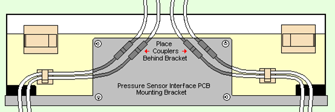
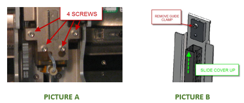
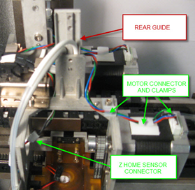
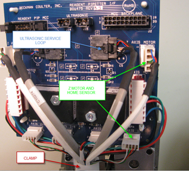
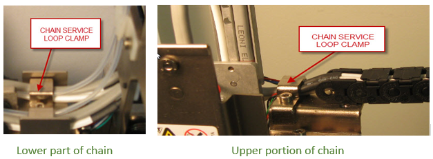
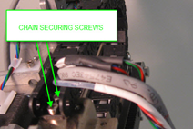
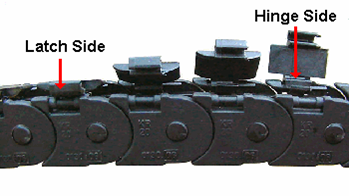
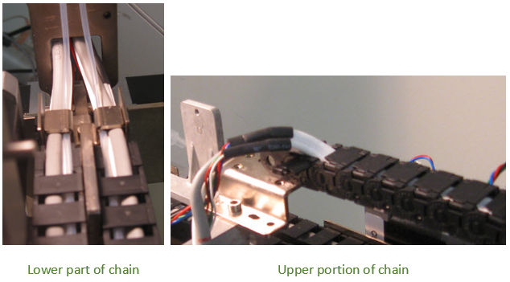
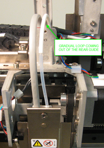

RP: Replacing Reagent Pipettor (Linear Y Axis) Tubing or Service Loop
This procedure describes how to replace the CnS tubing and the Service Loop cables on a pipettor with a Y axis linear slide.
Note:
- The CnS tubing is only compatible with the CnS transducer.
- All the screws on a Linear Y A xis gantry are metric.

Note: DxI 600 instruments only have one pair (two) of pipettor tubes routed from the fluidics module.
- Open the main upper left cover and insert a cover interlock switch bypass.
-
Drain the tubing for each pipettor being serviced.
- From the Main Menu, select Diagnostics > Device Diagnostics > Digital Devices > Peristaltic and Vacuum Pumps.
- Enable the vacuum pump for the pipettor being serviced.
- Verify that the pipettor is directly over the wash tower.
-
Remove the fitting from the pipettor precision pump and allow the wash buffer to drain into the wash tower.
Caution: When draining wash buffer from the tubing, do not let fluid leak onto the instrument or any of the instrument components. Hold a dry paper towel under the disconnected fitting.After the tubing is drained, disable the vacuum pump and exit the Digital Devices screen.
-
Remove the tubing and service loop from the long service loop guide.

- Disable the pipettor motor, and manually move the pipettor carriage fully forward.
- Remove the 4 screws that secure the long service loop guide (PICTURE A).
- Slide the cover off the raceway and disconnect the service loop electrical connections from the service loop guide(PICTURE B).
- Remove the service loop guide clamp (PICTURE B).
- Disconnect the CnS fitting from the transducer.
-
Remove the Rear guide.

- Remove the Rear Guide (PICTURE ABOVE).
- Disconnect the Z Motor connector and remove the cable from its clamps.
- Disconnect the Z Motor sensor.
-
Disconnect Service Loop cables from the Pipettor interface PCB.

- Disconnect Z motor, Z motor home sensor, and the ultrasonic service loop cables from the pipettor interface PCB (SEE PICTURE ABOVE).
- Remove cables from the securing clamp (SEE PICTURE ABOVE).
-
Remove the chain.

- Remove the service loop clamps at both ends of the chain (PICTURES ABOVE).
-
Remove the securing screws at both ends of the chain (PICTURE BELOW).

- Remove the chain.
-
Opening the chain.
Note: The chain contains 3 components: the CnS tubing, the ultrasonic service loop, and the Z motor electrical harness.
- Extend the chain to straighten it, and then rotate it so that the covers on the links face upward.
-
Open the chain links (PICTURE BELOW).

-
Replacing the service loop component in the chain.
- Remove the component in question.
- Add the replacement component to the chain.
-
Be aware of the orientation of the components in the chain (PICTURES BELOW).
- The tubing and the ultrasonic cable lie on the bottom of the chain.
- The motor harness is placed closest to the chain links.

-
Reassemble service loop.
-
Mount the chain.
- See pictures (Steps 6 and 8) for the chain orientation.
- Secure the chain with 2 screws at each end (See Step 6).
-
Reconnect the service loop components to the transducer (See Step 3).
- Run the ultrasonic service loop into the long service guide raceway.
- Connect the loop to the transducer connections.
- Route the CnS tubing through the raceway and connect the fitting to the transducer.
- Slide the cover back on the raceway.
- Place the loop and tubing in the clamp and fasten it on to the long service loop guide.
-
Fasten the long service loop guide (Step 3).
- Ensure that the CnS tubing will sit in the transducer housing channel (Picture A below).
- Slide the long service loop cover into the Z axis sensor (Picture B below).
- Secure the long service loop guide to the transducer with 4 screws.
- Route and connect Z motor and home sensor connectors (Step 4).
-
Install Rear Guide (Step 4).
- Push the transducer down to the maximum Z travel.
- Install the Rear guide.
- Ensure that the ultrasonic service loop and the CnS tubing has a gradual loop to the transducer (Picture below).

- Install the service loop clamps at both ends of the chain (Step 6).
- Reconnect electrical connections to Reagent Pipettor Interface PCB (Step 5).
-
Mount the chain.
-
Verify system operation.
Refer to VSR: Reagent Pipettor document.